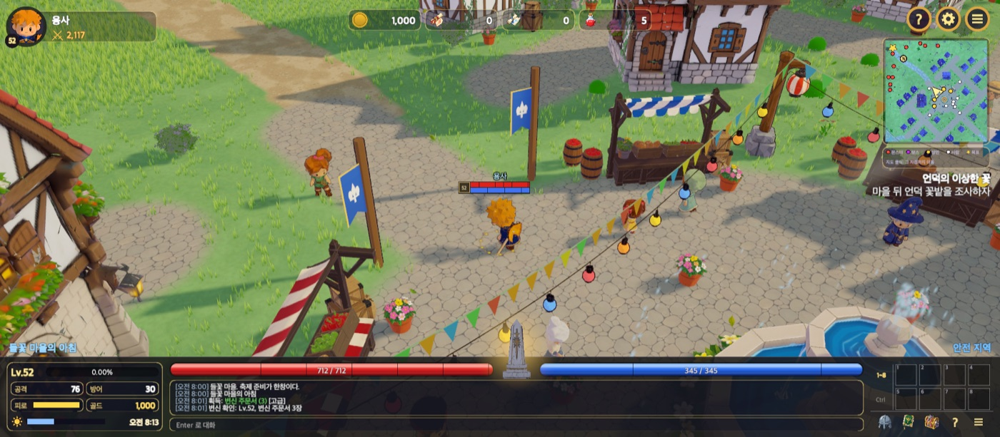
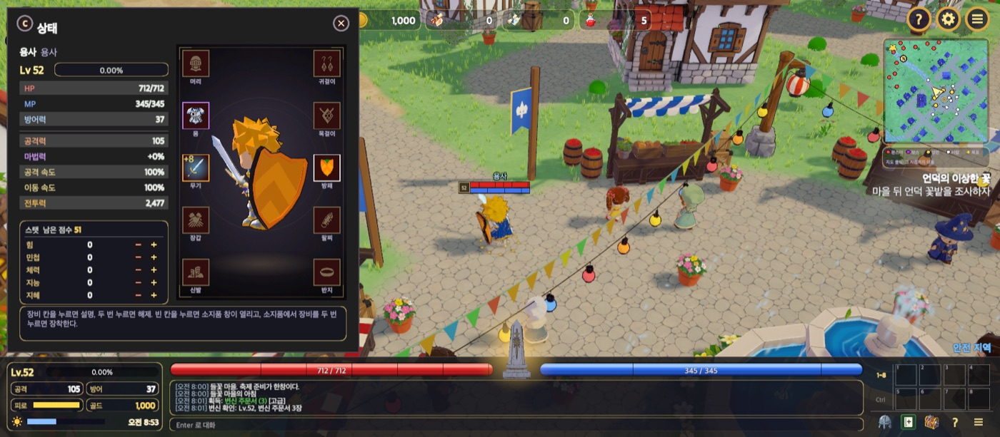
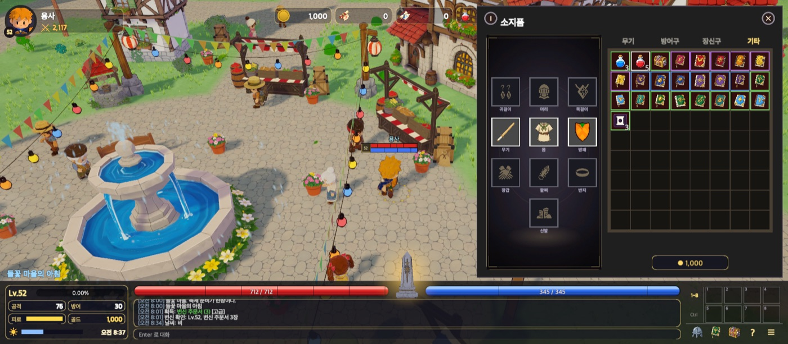

진행 중 프로젝트 · 기준일 2026-10-18
동화풍 판타지 3D RPG 를 Unity 6 · C# 로 개발하고 있습니다. 게임 디자인 · 시나리오 · 그림체 · 수치 방향은 사람이 정하고, 구현 방식 · 리팩터링 · 검사 추가 같은 기술 결정은 AI 코딩 에이전트(Claude Code)가 정해 실행하도록 권한을 나눴습니다. 결과물은 테스트 · 플레이 검사 · 부하 측정 · 빌드 경고 0 을 통과해야 커밋됩니다.
2026-10-18 저장소 측정
2주 동안 작업일 12일에 커밋 218건 · GitHub 이슈 208건을 처리했습니다. 전투 · 성장 · 아이템 · 강화 · 마법 · 변신 · 상점 · NPC 대화 · 날씨 · 낮밤 · 저장을 구현했고, 수치는 모두 DB 표로 관리합니다. 규칙과 수치는 EditMode 테스트 593건으로 고정했습니다.
플레이 검사 스크립트가 찍은 실제 플레이 화면



게임 기본 시스템을 먼저 끝내고 시나리오로 넘어가는 순서
BasicBiz<T> 싱글턴(Instance 하나만 public), 순수 규칙은 *Rules static, 상속 없는 class 는 sealed (리플렉션 테스트로 검사)생성 모델 → 감면 · 리깅 → 툰 셰이딩 → 룩북 승인
permissions.ask)으로 호출마다 승인 창이 뜨게 고정했습니다.Claude Code · 권한을 나눠 맡김
WMS 프로젝트에서 만든 절차를 게임 개발에 옮겼습니다. 이번에는 기술 결정 권한을 에이전트에 넘기고, 사람은 설계안 결정과 결과 검수에 집중합니다.
| 장치 | 내용 |
|---|---|
| 인수인계 문서 | 세션이 바뀌어도 결정을 이어받도록 docs/HANDOFF.md 를 정본으로 두고 세션 시작 때 먼저 읽음. 파일 존재와 규칙 문구를 테스트가 검사 |
| 이슈 · 계획 | 모든 요청을 이슈(개선 · 버그 · 결정 요청)로 받고 docs/plan/ 계획 문서 27개에 순서와 완료 기준을 적음. 커밋 메시지 Closes #N 으로 닫음 |
| 규칙의 검사화 | 사람이 정한 규칙은 테스트로 고정하고 한 번 깨뜨려 실패를 확인. 예: 주석에 요청 인용 · 날짜 · 과거 경위 금지(CommentRuleTests), 상속 없는 class 는 sealed(ScriptFileTests), Data 계층 public static 금지(BasicBizTests) |
| 장 규칙 · 화면 기준 문서 | 새 장의 상점 · 사냥터 · 경험치 규칙(chapter-rules.md)과 창 · 대화창 · HUD 기준(ui-style.md)을 먼저 읽고 따름 |
| 병렬 세션 | 아이템 생성 시험 · 1장 데이터 같은 작업을 별도 세션으로 나눠 진행하고 계획 문서와 이슈로 합침 |
통과하지 않으면 커밋되지 않음
2026-10-05 ~ 10-18